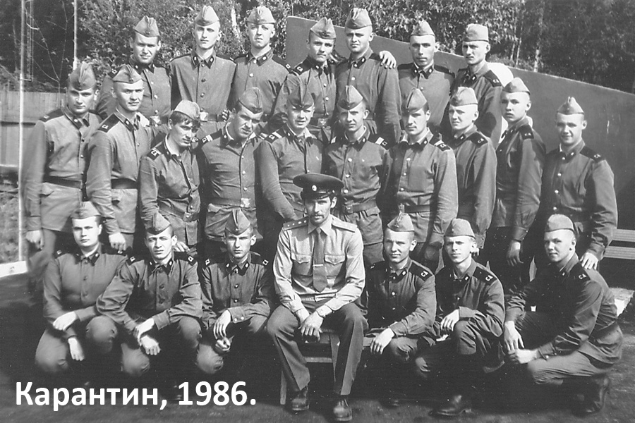

Часть 1
Как это все начиналосьПервое знакомство
Присяга
Распределение
Первая командировка
И такое бывает
Новый год
Как это все начиналось
Это были золотые 80-е годы, время комсомола и пионерии, время повального увлечения группами «Битлс», «Абба» и завершение эпохи хиппи: длинные волосы, брюки клеш, магнитофон на плече, тертые кирпичом и вареные джинсы уже отживали свое.
Я, студент 3-го курса института, конечно, не очень хотевший отдавать два года жизни службе, регулярно «терроризировался» военкоматом. Наше поколение, именуемое детьми детей войны, жило в период демографической ямы, которую нужно было заполнять для обновления рядов вооруженных сил. И каждый год весной, в конце курса, мне приходили повестки на комиссию, а потом - на отправку. Но поскольку я учился неплохо, деканату дважды удавалось добиваться отсрочки. Институт грудью становился за тех, в ком был заинтересован: члены велосипедной сборной института, теннисисты, гандболисты и те, кто хорошо учился, отстаивались перед военкомом до последнего, и... совершенно безвозмездно. К 3-му курсу на нашем потоке из 120 человек остались в основном девчонки и 15-20 парней, 10 из которых были кубинцы, несколько уже отслуживших и пара «белобилетников». Эти повестки имели и положительный момент: по ним мы сдавали экзамены досрочно, а преподаватели со слезами на глазах авансом ставили «4» и «5» («3» при полном отсутствии знаний) будущим защитникам отечества. Три сессии благодаря военкомату были сданы без больших проблем. Но 3-й курс стал роковым - вуз был бессилен: не служивших и не имеющих больших противопоказаний по состоянию здоровья осталось только трое.
И вот этот «счастливый» день настал. С вещами, многие уже со стрижкой «под ноль», зашли на территорию облвоенкомата, и железные ворота бесповоротно закрылись. Областная медицинская комиссия еще раз бегло провела осмотр будущих бойцов Советской Армии, поставив на все личные дела штемпель «Годен», хотя это была просто стандартная процедура и здоровье призывников никого не интересовало. Я был склонен к повышенному давлению, и при последней медкомиссии перед отправкой увидел на тонометре свое давление: 160 на 100. Врач же спокойно записал в карточку 120 на 70. Я был несколько удивлен, но начинать службу с разборки не хотелось. Тогда брали всех: и с плоскостопием, и с глухотой, и с язвой, и с определенной степенью дебильности (забирали даже с эпилепсией, если во время военкоматовского обследования в больнице приступ не повторялся). Не брали только сердечников и полных дебилов. Хотя иногда и их брали, но потом комиссовали уже из части. (Забегая вперед, скажу, что процесс комиссования из части был весьма длительный. У нас в роте были двое досрочных дембелей: один - молодой отец, у которого через пару месяцев после призыва родился ребенок, а другой - полный дебил, у которого улыбка не сходила с лица, даже когда он спал, а идиотский смех был слышен еще за километр до его приближения. Так вот, улыбчивый наш был уволен через 10 месяцев после призыва, хотя в дом «хи-хи» его свозили еще в начале пребывания в части. А молодой папашка отбыл на родину, отслужив 14 месяцев, и успел как раз на празднование годика своего сына. Процесс демобелизации, конечно, можно было и ускорить, но в те годы взятки были не таким распространенным явлением. Одни еще боялись брать, а другие - давать. Да и взятки были другие: ящик коньяка или хорошей водки, хороший кусок мяса и тому подобное. О тысячах или десятках тысяч рублей никто не говорил.)
Началось тягостное ожидание. Никто из офицеров ничего нам не говорил, только лишь регулярно проводили переклички и шмоны личных вещей. Предварительно я был приписан в наземные ВВС, но поскольку призывался в начале июня (студентам дали сдать сессию), все строевые войска были уже укомплектованы, а сержант из военкомата сказал под большим секретом, что теперь отправляют в стройбат.
Через пару часов нас закрыли в военкоматовском клубе, в котором вместо стульев стояли деревянные двухярусные нары, лежаки которых были оббиты уже порвавшимся во многих местах дермантином. Призывники из районов иногда жили в этом клубе по несколько недель, ожидая запроса на отправку их команды. С самого утра в клубе крутили фильм - «Чапаев». Но кино абсолютно не увлекало, особенно когда пошло по второму и третьему разу.
Наконец прозвучала команда на построение. После проведения поверки мы поняли, что пришло время отправляться в путь: военкоматовские ворота медленно открылись, и колонна последовала на ж/д вокзал. Куда мы едем - никто из призывников не знал.
На вокзале ждали недолго, около 200 человек погрузили в общий вагон московского поезда, так что направление было уже понятно. Несмотря на частый и тщательный осмотр вещмешков и изъятие разного рода спиртосодержащих жидкостей, часть «огненной воды» удалось припрятать. Ее передавали провожающие через окна вагона, которые в силу своей неисправности проводникам не удалось закрыть.
Так как количество «пассажиров» превышало количество посадочных мест, то даже багажные полки были заняты. Правда, практически никто не спал. Первые несколько часов народ оживленно обсуждал предполагаемое место прибытия, ведь московский поезд - это не обязательно в Москву. Когда офицеры перестали курсировать по вагону и уединились в отдельной плацкарте, завешенной простыней, мы тоже устроили небольшой междусобойчик. Но того запаса спиртного, который удалось сохранить, было явно мало, чтобы, пардон, нажраться, а на станциях, по многим причинам, двери вагонов проводники не открывали. Но оно и понятно: кто-то сбегает в буфет за парой-тройкой поллитровок, а кто-то - с концами. Ищи его потом. Остаток ночи мы бурно обсуждали предстоящие, вычеркнутые из жизни, два года. Дальше ждала неизвестность.
Выгрузившись на Киевском вокзале города Москвы, мы увидели большое количество офицеров и сержантов, которые встречали поезд: их лица не светились радушием, а часто произносимое слово «духи» пугало. Не многие из нас знали, что оно означает. А говорило оно о начале тяжелой армейской службе.
Перед строем начали выходить офицеры и зачитывать фамилии тех, кого они «покупают». Наконец вызвали и меня. Офицер был высокий, с заметным запахом перегара, но веселым и общительным. Он отобрал человек 15, в основном, студентов-недоучек, поскольку почти весь наш контингент из них и состоял, но в поезде с нами ехали еще и бегуны, которых военкомат ловил, почти сразу запихал в поезд и отправлял на службу подальше от дома. Нас погрузили в кунг, где уже удобно расположилась пара сержантов. По дороге они немного рассказали нам о службе и о работе, не сильно пугая трудностями армейской жизни. Лейтенант добавил, что наша часть - хозрасчетная, и если мы будем хорошо работать, то вернемся домой с деньгами.
Ехали долго, больше 2-х часов. В маленьком окошке кунга было видно небо и верхушки деревьев, возникало ощущение, что машина едет через леса, и оно было не далеко от истины.
Первое знакомство
И вот машина остановилась. Когда открылась дверь кунга, мы увидели человек 30 зрителей, которые окружили машину. Новая форма на них сидела несколько мешковато, а затянутые ремни со сверкающими бляхами, накремленными до блеска сапогами и застегнутыми воротничками выдавали в них наших коллег-духов, прибывших в часть раньше нас. А возле плаца стояла группа бывалых солдат с пилотками на затылках и ремнями почти на яйцах, которые гостеприимными выкриками «Духи, вешайтесь!» и «Мы будем вас е...ать!» поздравили нас с приездом.
Часть производила несколько удручающее впечатление: со всех сторон забор с колючей проволокой, пара солдат из комендантского взвода с автоматами у транспортных ворот, а вокруг лес. Невдалеке - одиноко стоящее 7-этажное красивое здание в состоянии завершения строительства (санаторий «Русь»), а чуть дальше - пара 2-х и 3-этажных строений, одно из которых именовалось «Аврора» и почему-то особенно тщательно охранялось вооруженным комендантским взводом. Вокруг - лес, а севернее - Рузское водохранилище, но тогда мы еще об этом не знали, а сквозь деревья его видно не было. За забором еще одна часть - строители и сантехники. Казармы в обоих частях - деревянные, крупно-щитовые (времянки), и похожи на длинные сараи. Общая столовая и чипок находились на стороне строителей. Комендантский взвод и местная «губа» тоже были на их стороне, но «пользовались» мы ими примерно одинаково. Посещение чипка иногда заканчивалось 3-х или 5-дневным «отпуском», так как выйдя за КПП нашей части к соседям мы становились объектами для охоты комендантского взвода. Но это было дико: чтобы купить пачку печенья нужно было собирать толпу и бегать уговаривать сержанта, чтобы он нас отвел. А в столовую, понятное дело, мы шли всей ротой и в сопровождении офицера.
Среди окруживших нас солдат были и землякии: Знамянка, Винница, Кривой Рог, Донецк. (Тогда, в 80-е, находясь достаточно далеко от дома, слово «Украина» было каким-то теплым и домашним. И неважно, кто откуда призвался - центр, запад, восток... Мы были ЗЕМЛЯКИ, с одной земли. Проезжающий по улице автомобиль с украинскими номерами вызывал приятное оцепенение, ведь машина практически из дома, с Украины. Не то что теперь: те - русскоязычные, эти - украиноязычные, а эти - вуйки или бандеры, те - сепары. Да, в те годы мы, все-таки, были умнее.) Главный вопрос - где мы, - наконец, решился. Часть находилась в десятке километров от города Руза, маленького городка на сотню частных домов и небольшое количество пяти- и трехэтажек. До Москвы около 100 километров.
Вновь прибывших повели в столовую, которая внутри выглядела хуже, чем снаружи: большой металлический ангар с полом из тротуарных бетонных плит и лужами на нем из-за протекающей крыши. Столы на 10 человек были грязно-серого цвета и на ощупь казались липкими. Меню было несколько странным: представьте себе такое блюдо, как пюре в мундире (картошка была практически не почищена) с вареной кислой капустой. Да многие блюда готовились с использованием этого ценного продукта. Есть это было сложно, поэтому я ограничился чаем и кусочком белого хлеба с маслом. Желание есть напрочь отсутствовало. После позднего ужина - баня, а точнее, душевая с холодной водой. С нас сняли «гражданку» - последний атрибут невоенного человека, выдали обмундирование и отвели в учебную роту.
Все казармы были одинаковыми: жилые помещения, канцелярия, ленкомната, каптерка, бытовка, сушилка, туалет и умывальник. Вновь прибывшим выделили койки, выдали постельное белье и мы приступили к приведению формы в уставной вид. Ровно пришить погоны с первого раза мало у кого получилось, а подворотнички из белой ткани, которые нужно было подшивать каждый день, тоже вызывали определенные трудности. Наконец, все пришито, сапоги начищены, а во лбу, в смысле, на пилотке, красуется звезда с серпом и молотом.
Первая вечерняя поверка прошла быстро, сержанты ждали начала тренинга: отбой-подъем за 45 секунд. Это было что-то: мы на своей шкуре поняли, что значит фраза «Мы будем вас е...ать». Ноги не попадали в брюки, портянки не хотели хоть как-нибудь мотаться на ноги, куртка ХБ иногда застегивалась не на те пуговицы, а сержанты пинками в мягкое место подгоняли тех, кто шевелился не очень старательно. (Но сразу хочу оговориться, что избиений со стороны сержантского состава не было. «Разборки» происходили, в основном, между нами, «молодыми», а от солдат других рот мы были изолированы и встречались с ними только в столовой или на разводе.) Последний, кто становился в строй, отправлялся в наряд. Нарядчиков набралось человек 15-20, но в этот день я не попал в группу слабейших и отправился спать. Этим вечером мы познакомились лишь с малой долей армейской «камасутры». Хотя были дни, когда мы отрабатывали подъем-отбой до глубокой ночи: после того, как сержантам надоедало нас «дрессировать», и мы уже лежали в постели, готовые заснуть, в кубрик заходил кто-нибудь из ефрейторов-сержантов и шепотом говорил: «Дедушка заболел!». На что нам нужно было дружно ответить: «У-у-у-у!», потом снова сержант: «Дух повесился!», а мы: «Ну и уй с ним!». Но у нас частенько получалось наоборот, после чего «тренинг» возобновлялся и шел до полного взаимопонимания.
Ночь я не заметил. Было такое ощущение, что как-будто только закрыл глаза, как сразу услышал команду «Подъем 45 секунд». Долго мучить подъемами нас не стали: так, для разогрева раз 8-10, и вывели на первую армейскую зарядку, на которую вышла только учебная рота. Бойцы других рот просто постояли у своих казарм и рассосались по территории части, и лишь некоторые из них сами пошли на спортплощадку немного подкачаться. Наша же зарядка представляла собой 3-километровую пробежку от КПП части до выезда на трассу и назад. Последняя десятка бойцов, пришедшая к финишу, как водится, отправлялась в наряд. Большинству из нас, детей диванов и телевизоров, эта пробежка далась тяжело: сбитое дыхание, язык «на плече», спадающие тяжелые сапоги, растертые в кровь ноги из-за неправильно намотанных портянок. Ближайшие 730 дней в сапогах казались почти пожизненным сроком.
После зарядки и уборки спальных помещений - завтрак, который я не смог съесть: горьковатая пшенная каша, хлеб, чай и пара кусочков рафинада. Вообще, в нашей части кормили неважно. Как должны кормить в армии я узнал позднее, когда работал в поселке Ягунино.
После завтрака - солдатские будни. Нет, не сборка и разборка автомата, а чтение, а точнее, заучивание уставов, уборка казармы и прилегающей территории и самое «любимое» - строевая подготовка. По несколько часов на плацу в любую погоду: «Делай раз!» - и левая нога поднимается на уровень колена, потом пауза, пока сержант покурит или поговорит со своими друзьями. Все это время стоишь на правой ноге, держа вытянутую левую на весу на уровне колена. За недержание ноги на нужной высоте – удар по ступне. «Делай два!» - левая нога наконец-то стала на землю, но тут же на счет «три» поднялась правая. Ног после такой строевой просто не чувствуешь, да и пот, заливающий глаза в 30-градусную жару, тоже не доставлял положительных эмоций. Но самое нудное - суббота, - утренние политзанятия, на которых глаза закрываются сами собой, а сквозь сон вдалеке слышишь знакомые до боли слова «КПСС», «пленум», «решения в жизнь». И когда эти слова отдаляются все дальше и дальше, тебе на голову опускается большая полутораметровая деревянная линейка. А после занятий - парко-хозяйственный день: в очередной раз генеральная уборка в казарме и баня.
В бане же происходила смена и постельного, и нательного белья. С постельным больших проблем не возникало, разве что кто-то упрет твою свежую простыню на подшивку, и тогда придилось долго объясняться со старшиной. А вот с нательным бельем, и смех и грех, бывали разные казусы... Представьте себе майку, у которой не разорваны, а оторваны плечики. Приходилось вместо них привязывать в несколько раз сложенную нитку, после чего получалась такая себе гламурная ночнушка. С трусами тоже не всегда везло: об отсутствии резинки я вообще говорить не буду, это такая мелочь, а вот дыра во все сидалищное место или разорванная мотня, превращающая трусы в юбочку, требовала какого-то решения.
Качество стирки белья оставляло желать лучшего, особенно светлое зимнее белье, на котором были хорошо видны коричневые или желтые следы в нижней части кальсон. Иногда свежеполученные кальсоны брезгливо скручивались, а бойцы до следующей замены предпочитали ходить вообще без белья.
С портянками тоже не всегда складывалось: местная борзота («элита») полировала свои сапоги чьей-то портянкой, пока владелец портянки удалялся перед отбоем справить необходимую нужду или уже спал. Нам, не «борзым», было противно даже брать в руки чужую портянку, не говоря о том, что зачастую она издавала такой аромат, что... Кто служил, знает. Но наша «элита» была не брезгливая. Так вот, если портянку после такого использования бросали тут же, у кровати, то это еще пол-беды - через неделю поменяешь, но иногда ее выбрасывали. Тогда владельцу портянки оставалось одно: оставшуюся портянку при сдаче разорвать на две. (Хотя был еще выход - слямзить портянку у кого-то из своих коллег, хотя общего расклада это не меняло). Но потом эти минипортянки возвращались после стирки, и кому-то очень везло. Заменить было почти невозможно, так как все было по количеству бойцов. Что сделаешь, если у некоторых солдат, особенно из восточных республик, понятия культура и порядочность напрочь отсутствовали, а такое поведение считалось крутым. Они даже позволяли себе воспользоваться чужой зубной щеткой и потом бросить ее в умывальнике, побриться чужим станком или надеть чужие носки, которые некоторые бойцы, в нарушение устава, зимой поддевали под портянки. За такое нахальство они попадали под раздачу, но продолжали брать пример со своих земляков из соседней строительной части, которая, в основном, состояла не из славян. А те, в свою очередь, наказывали обидчиков своих земляков. В общем, стычки по национальному признаку происходили почти каждый день, и если в самом начале службы они заканчивались примерно вничью, то со временем более дружные и агрессивные азербайжданцы, чечены и дагестанцы стали лидировать в роте: земляки дружно становились на защиту своего, а славяне жили группировками: если бьют из нашей группы - вступимся, если нет - то пусть бьют. А со временем всех тех, кого не удалось заставить работать на стройке, поставили либо командирами отделений, либо кладовщиками. Ну оно и понятно, чем командованию с ними бороться, легче убрать их из производства.
Офицеры пытались бороться с «выяснением отношений», хотя и не очень старательно. Для них главным было выполнение плана на стройке и отсутствие «вынесения мусора из избы»: о драках становилось известно, если у кого-то из бойцов были серьезные травмы. На мелкие, бытовые разборки, офицеры внимания не обращали, или, в крайнем случае, грозили пальцем и пугали комендатурой в случае повторения.
Свободного времени у нас практически не было. Постоянные занятия по совершенно бесполезным для нашего рода войск темам, строевая, типа тактические занятия, уборка, наряды, построения каждые 20-30 минут... Вечером, после вечерней прогулки с песней (15-20 кругов по плацу строевым шагом), вечерней поверки и пары десятков подъем-отбоев, мы, совершенно измотанные, засыпали. Но сон казался таким коротким. Часто снился дом, родители, друзья, даже институт. Но все это мгновенно и резко пропадало при крике дневального «Рота, подъем 45 секунд!»
Дальнейшее пребывание в учебной роте (да как и в армии в целом) не отличалось разнообразием. За это время я успел несколько раз подраться, один раз отстоять дневальным и пару раз драять полы «вне очереди». Под конец «учебы» на зарядку уже почти никто не выходил, да и сержанту не очень хотелось путешествовать с нами к трассе и назад, подворочники научились пришивать «напрокол», что не совсем по уставу (хотя там об этом ничего не написано), но значительно упрощает этот процесс, да и портянки уже не вызывали проблем с их правильным наматыванием. Голод – не тетка, и еда в столовой постепенно становилась съедобной. Несколько раз за это время сходили на стройку для уборки строительного мусора в красивую семиэтажку из мрамора и стекла, которая именовалась санаторием ЦК ВЦСПС «Русь» и предназначалась для работников высшего партийного и руководящего аппарата СССР. Санаторий оказался очень загадочным строением, но узнал я об этом несколько позднее. Близилась присяга и распределение по ротам для прохождения дальнейшей службы.
Присяга
К присяге готовились тщательно. Парадка была выглажена, все подшито, бляха на ремне была отполирована до невозможного блеска. Текст присяги учили, как «Отче наш». Даже некоторые узбеки, которые по-русски понимали только мат, и те могли оттарабанить присягу без запинки. Мат в армии – это отдельная история. Может, именно по причине многоязычности наших вооруженных сил, в первую очередь усваивались уставные команды и матерные, которые можно было выразить 2-я – 3-я словами. Хотя многие призывники из нерусскоязычных республик старательно «косили» под непонимание языка, но это лечилось достаточно эффективно тумаками и затрещинами. Но если после двух-трех моканий головой в «очко» в сортире непонимающий так и не начинал говорить или материться по-русски, тогда признавалось, что языка он действительно не знает. Мне, как временно бывшему студенту ВУЗа, сперва было сложно свыкнуться с армейскими традициями и ограниченным словарным запасом армейского быта, но человек привыкает ко всему. В дальнейшем, в приличном обществе, привычка материться очень мешала: речь становилась как у прибалта: фраза рождалась в голове, из нее мысленно удалялся мат, и только после этого произносилась коряво слепленная фраза, потерявшая всяческую логическую связку.
И вот присяга. На нее съехались многие родители, мои тоже не могли пропустить такое значимое событие. Трудно описать, какое это было счастье снова увидеть родные лица и хоть на несколько часов почувствовать себя не бойцом строительного подразделения, а человеком.
Нас построили повзводно, выдали автоматы (это был единственный раз за два года, когда я держал в руках оружие) и стали по одному вызывать к столу, накрытому красной скатертью. Вся процедура длилась около двух часов и даже как-то возвысила самого себя в своих же глазах. Тем, к кому приехали родные, дали увольнительную до вечера. Это был мой первый выход в город Руза. Чуть ближе к Рузе была еще одна строительная часть – Севводстрой, но если мы были сухопутные, то они – «морские». Они обслуживали плотину на Рузском водохранилище и участвовали в строительстве тоннелей под ним, как раз к нашему одиноко стоящему семиэтажному зданию. По их словам, общая длина подземно-подводных тоннелей составила более 30 км и соединялась с ситемой подземных тоннелей, предназначенных для эвакуации членов правительства СССР. Хотя рассказывали, что прошлые призывы Севводстроя тоже работали на санатории «Русь» в качестве строителей.
Сама Руза впечатления не произвела. Главная достопримечательность города - автовокзал, единственная транспортная развязка города. До железнодорожной станции Тучково - около получаса езды на пригородном автобусе, хотя там все автобусы пригородные, городского транспорта не было. Невдалеке располагались несколько магазинов, гостиница, кафе и фотоателье. До Москвы далековато и добираться нужно было с кучей пересадок.
Полдня с родителями прошли быстро, и нужно было возвращаться в часть. На КПП нас встретил дежурный офицер из «пиджаков» (некадровый офицер срочной службы, служивший после вуза с военной кафедрой) и предложил родителям переночевать в его комнате в офицерском общежитии. Меня же он отпросил у ротного до утра, чтобы я смог еще немного побыть вместе с родителями.
Общага мало чем отличалась от казармы, но была поделена перегородками из ДВП на отдельные комнаты площадью метров по 10-12, в которых стояли по 2-3 кровати, пару тумбочек и несколько стульев. Больше бы в нее просто не влезло. Туалет и умывальник, как и в казарме, в конце коридора. Слышимость великолепная – любой звук из первой комнаты отлично слышался в последней. Тут жили и холостые офицеры, и семейные. Вид маленьких детей, которые голяка гоняют по длинному не очень чистому коридору, вызвал жалость к обитателям этого «отеля». После небольшого ужина я заснул под звон бутылок и пьяное мычание в одной из соседних офицерских комнат, чтобы на утро начать отдавать свой долг родине уже в качестве рядового военного строителя.
Распределение
Попрощавшись с родными, я отправился в учебную роту, где должно было произойти распределение по ротам. Всего их было 4. Первые три почти постоянно находились в части и работали на санатории и жилом доме в Рузе, а четвертая моталась по всему Подмосковью и редко дислоцировалась на территории части. Вот в нее-то я и попал. Дедов в роте не было, только «черпаки», отслужившие по году. Из новичков сформировали два взвода по 4 отделения в каждом. Большинство черпаков были прибалтами, украинцами и белорусами, а наш призыв добавил в роту много чеченов, дагестанцев и азербайджанцев, были грузины, узбеки и таджики. В общем, вся наша дружная многонациональная страна присутствовала в одном помещении казармы, только в очень концентрированном виде.
С большинством старослужащих я быстро нашел общий язык. Первым моим товарищем стал сержант Чечель. Он хорошо играл на гитаре и был любимцем роты. Я тоже брынчал на трех аккордах. Каптер Дубинец соответствовал своей фамилии – широкоплечий, накаченный, бывший боксер. Он любил поиграть с молодыми, давая им боксерские перчатки и становясь с ними в спарринг. Боксом в прошлом занимался и взводный – прапорщик В. Он тоже иногда «шутиль»: построив взвод, медленно шел вдоль строя, но в определенный момент наносил короткий удар в грудь тому, кто был замечен в каком-либо нарушении. Процедура эта у нас называлась «скворечник» или «фанера». Мне тоже пару раз «прилетало в фанеру», но я не скрутился от удара, хотя немного лег не стену казармы. Больше он меня не трогал. Но почти никто из нас не обижались на эту «процедуру», так как лучше было получить тумак, чем полночи ползать с тряпкой. Прапор не вкладывал в удар всю силу, а просто жестко дурачился. Имея мало-мальский пресс и приготовившись к удару, его вполне можно было выдержать. Хотя были бойцы, которые писали домой слезные письма, рассказывая, как прапорщик ломает ребра и так бьет ладонью в лоб, что звездочка с пилотки впечатывается в голову, а огорченные родители писали комбату ответные злобные письма с жалобами на взводного. Но потом, по получении штабом этого злобного письма, наш же взводный зачитывал его перед строем, вызывая смех у большинства бойцов. Ну прямо как у Геннадия Хазанова: «Жильцам от начальника ЖЕКа: «На ваше письмо в Организацию Объединенных Наций сообщаю...»
Самой неприятной личностью был ротный капитан Р. Он редко использовал физические меры воздействия, в основном е… пудрил мозги. Построив вечером перед отбоем роту, он выходил из канцелярии в подштанниках и с сигарой в зубах, садился на табурет и давал команду «смирно». Минут через 15-20 начинали затекать ноги и спина (мы же не рота почетного караула), но ротный продолжал спокойно курить (сигара-то долго горит). Если кто-то шевелился или двигал головой, то сразу же отправлялся в наряд. Если ротному казалось, что штрафников мало, он шел вдоль строя и просовывал кулак под солдатский ремень некоторым, чем-то не понравившимся ему рядовым. Если кулак проходил, боец тоже отправлялся в наряд. Некоторым солдатам, чувствующим за собой грешок, чтобы избежать наряда, приходилось так затянуть ремень, что не то что кулак - палец просунуть не удавалось, впрочем, как и нормально дышать. Ротный «обижался» на такой поступок и пытался придраться еще к чему-нибудь. Незастегнутый на воротнике крючок, пилотка, надетая выше, чем на два пальца от бровей, подшивка, успевшая хоть немного потемнеть, не отполированная бляха на ремне или сапоги, не очень тщательно намазанные сапожным кремом (который часто отсутствовал в казарме), да даже непонравившийся, брошенный исподлобья взгляд, - все это было поводом отправить бойца в наряд. «Залеты» во время рабочего дня (посещение магазина, курение на рабочем месте, невыполнение дневной нормы...) тоже присовокуплялись к делу наведения порядка в казарме. Если ротный был не в духе, там оказывалась большая половина роты.
Хотя мы не оставались у него в долгу. Как-то раз, как всегда работая на стройке в жилом доме, мы увидели приближающегося «любимого» капитана. Не долго думая, мы поставили старую малярную пластмассовую ванночку со строительным мусором на верхний торец приоткрытой входной двери (в квартире, в которой еще никто из отделочников не работал). Ротный же заходил во все помещения, надеясь найти там бездельничающих или спящих солдат, ну и зашел...
В другой раз дагестанец «Данила» из нашей местной борзоты перед обедом прилег на кровать и заснул, да еще и в сапогах. На ротного такой поступок действовал, как на быка красная тряпка. Борзых в роте не любили, поэтому никто не предупредил спящего о приближении начальства. Мало того, кто-то успел на листике накарябать фразу: «Кто разбудит меня, тот пи**р», и положить его на спящего и этим «убить двух зайцев»: и «Данилу» проучить, и ротного поставить в не очень ловкое положение. Народ с любопытством поглядывал то на «Данилу», то на медленно «катящегося» по казарме капитана. И вот ротный оживился, увидя торчащие между прутьями кровати сапоги, и с ехидной миной на лице двинулся к кровати. Мы ждали, что будет дальше. Ротный явно собирался сбросить нарушителя с кровати на пол и уже протянул руку, но тут увидел лежащую на «Даниле» бумажку. Пару секунд он стоял, как вкопанный, наклонившись над спящим бойцом, но быстро нашел решение: «Дневальный, ко мне! Разбудите бойца и сопроводите его ко мне в канцелярию». Мы были несколько разочарованы, ожидая чего-то более веселого, но ротный достойно выкрутился из нашей подляны. Да и на «Данилу» посещение ротного не возымело никакого действия: он имел в виду любое начальство, и где бы ни оказывался, получив взыскание, все равно не работал. Офицеры были бессильны, хотя регулярно отправляли его и в наряд, и на гауптвахту, а иногда и немного мутузили.
А однажды зимой, будучи в командировке и квартируясь в казарме другой строительной части, мы устроили ротному небольшой каток. Его на время командировки поселили прямо на стройке в прорабский вагончик с поломанным крыльцом, без поручней, а вместо ступенек лежали автопокрышки. Часов после 12 ночи, когда капитан уже отбыл в свою опочивальню и смотрел сны, мы набрали 5 или 6 ведер воды и тщательно залили крыльцо и «ступени». В 30-градусный мороз вода замерзла очень быстро. А утром еще до подъема мы «прилипли» к щелям в заборе, ожидая выхода нашего капитана. План сработал, и мы потом несколько дней хихикали, вспоминая акробатические этюды нашего ротного.
Среди нас, духов, продолжались разборки. Почти все выходцы из мусульманских республик стали сильно верующими: религия запрещала им брать в руки ведро, тряпку и работать наравне со всеми. Хотя все время они с успехом «трескали» свинину, как «настоящие» мусульмане. Правда некоторые все же отказывались есть свиное мясо, но ведь на свином жире готовилось все - и супы, и каши, - а жирные сопли (вареное сало) попадались в любом блюде, ну кроме чая, киселя и компота. Так что свинина употреблялась всеми: и мусульманами, и нет.
В общем, чтобы выстоять в тех условиях, нужно было либо сразу бить, а потом уже думать, либо проявлять упорство, а точнее даже упрямство. Выстояв пару раз, ты занимал определенное положение в роте и тебя уже не трогали. Все это несколько напоминало законы зоны, но эта зона - почетная обязанность перед родиной, а та, другая, – пятно на всю жизнь.
Да и иерархия в роте напоминала зону: были, назовем их «авторитеты», их в роте уважали, и хотя они почти не работали, а в основном гоняли чифирь, но никого не напрягали работать за себя. Это, в основном, были старослужащие, выходцы из Беларуси. Офицеры лояльно относились к авторитетам, так как те выполняли определенные «воспитательные» функции. Пацаны жили по понятиям и взаимных претензий у нас не было. Да и было их всего несколько человек. Вторая группа самая многочисленная - работяги. Третья - даже не знаю, как их назвать: беспредельщики, в основном - выходцы из Чечни и Дагестана. Они все время были чем-то недовольны, кого-то заставляли ходить в магазин за сигаретами и чаем, чистить сапоги, работать вместо себя, а «непослушных» мутузили. Грузины тоже не очень напрягались по работе, хотя работать не отказывались. Мы их уважали: немногословные, они старались ни с кем не конфликтовать, но если начинался наезд, то дружно становились плечом к плечу. А последняя, 4-я группа - эта те, кто не выдержал ломки «беспредельщиков» и становился их прислугой. Но хочу сказать, что такой беспредел длился не все время. После полугода службы количество таких неуставных отношений стало намного меньше, прошло, что-ли, притирание и привыкание. Нет, случалось, но уже не часто.
Бывало, что чморями (чмырями) становились и старослужащие, всю службу пробывшие на блатных должностях: библиотекарь, санинструктор, хлеборез, повар, каптер, КППшник и т.д., а перед дембелем (или по залету) был отправлен в роту для выполнения дембельского аккорда. Зачастую после такого «падения» эти бойцы собирали объедки в столовой, ходили грязные, в рваной одежде. Мы то уже приспособились жить в условиях «джунглей», а эти ребята, привыкшие к теплу, сытости и забывшие службу, очень быстро деградировали. Мы все проходили этапы этой деградации в самом начале службы, но он был растянут во времени на 3-4 месяца, после чего вырабатывалась приспособляемость к извращенной армейской жизни, и что самое главное, нас таких было много. Но у них не было этих месяцев и они были одиночками. Да и не имея опыта работы на строительстве, они выполняли самые тяжелые и неквалифицированные работы. Пусть стройбат - это и нестроевые войска, но зачастую это была служба похлеще, чем у танкистов или мотострелков. Травмы, бессонные ночи, отмороженные руки-ноги-уши, недоедание, частые разборки между собой, ежедневная тяжелая физическая работа - все это СТРОЙБАТ.
Старослужащие практически не вмешивались в наши разборки, предоставив нам решать свои проблемы самостоятельно. Хотя бывало и они попадали под раздачу беспредельщиков: у нас не было дедовщины, у нас были землячества. При таком раскладе абсолютно неважно, сколько ты отслужил. Что лучше, а что хуже - а Бог его знает. И там, и там есть свои «прелести».
Но хватит о грустном... Прибывание в части не прошло без забавных приключений. Недалеко от части снимался фильм «Сильнее всех иных велений» о князе Голицине, а личный состав использовался киношниками в массовках. Наше отделение не попало в кадр - мы занимались реквизитом, перекатывали кареты и повозки к месту съемки. А в свободное от съемок время изучали достопримечательности охотничьего домика, в котором тоже иногда проходили съемки. Восхищали чучела волков и кабанов почти в человеческий рост, которыми изобиловали комнаты домика, на стенах висели старинные ружья. А вот массовые съемки вызывали смех: в первых рядах шли красавцы статисты в полной амуниции того времен, чуть дальше - солдаты в белых кальсонах, рубашках и кирзовых сапогах, а на головах - только кивера, а в самом конце - толпа в исподнем белье без всяких атрибутов того времени. Но у киношников все получилось. Спустя много лет в Интернете я посмотрел этот фильм, как по мне - кино на любителя, но карету и тарантас, который мы то завозили, то вывозили из усадьбы у охотничьего домика, я узнал.
И еще - я начал курить. Нет, я потягивал сигареты лет с 13-14, но редко и в компании. А тут взводный прапорщик посодействовал: мы отделением сидели на перекуре, в смысле, все курили, а я просто сидел. Проходящий мимо прапор в свойственном ему стиле спросил: «Кому сидим?». «Так перекур, товарищ прапорщик!», - дружно ответили мы. «Не вижу, чтобы все курили. Кто без сигареты - вечером в наряд», - сказал он. И не обманул - вечером после отбоя я отправился драять полы. Когда такая же ситуация повторилась, меня выручил мой кореш Сыч: прапор еще не успел начать фразу о наряде, как Сыч впихнул мне в рот уже подкуренную сигарету и сказал: «А сегодня мы все курим». Прапор улыбнулся и ушел. А поскольку перекуры мы старались устраивать почаще, то все чаще у меня в зубах появлялась сигарета. Хотя когда на стройке появлялся ротный, перекуры проходили намного реже и на стреме: увидит Босс (он же Колобок) - клички ротного в солдатском окружении, - будешь драять полы в особо извращенной форме.
Первая командировка
Вскоре мы отправились в первую командировку, в г.Кубинка-2, где расположен союзный музей бронетехники, институт танковой брони, аэродром и полигон. Городок был обнесен забором, который постоянно патрулировался, на КПП – камеры наблюдения (в те то годы). Квартировались мы на территории строительной части, расположенной за пределами Кубинского военного городка. Войти в городок без пропуска было нельзя, хотя мы иногда находили слабые места в охране и проникали на территорию, если офицеры забывали выписать на нас пропуск. Иногда патруль выдворял нас из городка, но наше начальство быстро улаживало вопросы и мы уже официально следовали на работу. Наша цель – жилая пятиэтажка, с крыши которой на горизонте виден полигон и большущая решетчатая антенна дальней противоракетной обороны.
День в этой части начинался с развода под вынос флага и барабанную дробь: на плацу строились все роты, командиры рапортовали комбату или начальнику штаба и под барабан расходились по своим объектам. В нашей же части развод проходил более спокойно: «Ровняйсь! Смирно! По объектам! Вольно! Разойдись!». Эта процедура несколько забавляла – торжественным маршем на уборку мусора, рытье траншей и таскание носилок и ведер с раствором.
Понятие «субординация» в стройбате было относительным. Если своих офицеров мы хоть как-то слушали - от них все же многое зависело: и увольнительные, и наряды, и очень редкие отпуска. Поэтому со своими лучше было не очень наглеть. А чужие офицеры они и в Африке чужие. Именно в Кубинке произошел инцидент с начштаба кубинского строительного отряда, к которому мы были прикомандированы. Однажды ночью он проводил контрольную поверку личного состава. Бойцы его части, жившие в другой половине казармы, быстро, за 45 секунд, выполнили команду «подъем». На нашей же половине даже свет в кубриках не включился. Начштаба был взбешен таким игнором, лично включил свет в нашей половине и с криками и матами пошел между кроватями, сильно их раскачивая. Но мы «спали». Когда его крик перешел в визг, из дальнего кубрика, в котором разместились старослужащие, вылетел сапог и, «просвистев» у головы офицера, увесисто грюкнул о стену. Начштаба замолчал и было видно, что он в шоке. Но поскольку мы по-прежнему «спали», он вызвал дежурного по роте и распорядился проверить, у кого из бойцов не хватает сапога. Мы лежали и держались изо всех сил, чтобы не засмеяться. Но когда дежурный доложил, что у всех по паре сапог, некоторые кровати стали поскрипывать и мелко трястись. Офицер не поверил и сам пошел по кубрикам. Но увы, с сапогом ему не повезло. Откуда взялся неучтенный сапог мы так и не поняли, а вопли начштаба о нарядах, о комендатуре, о дисбате мы просто игнорировали. Пришедшие утром наши офицеры, как всегда, погрозили пальцем, повоспитывали, сказали «а-я-яй» и привычно повели нас на работу.
Первая моя работа – плотник, так как еще в школе я получил удостоверение станочника-оператора по деревообработке. Конечно, никаких станков и в помине не было. Был большой чемодан, в котором было все: киянки, стамески, рубанки, ножовки… Рядом со складом лежала куча тонких досок, точнее обрезков, годных разве что положить в лужу, чтобы пройти и не намочить ноги. Но был получен приказ делать из этого барахла небольшие строительные козлы для малярных работ. Попытки объяснить, что с этого… ничего путного не выйдет, результата не дали. Зато было получено первое предупреждение. Еще одно – и наряд вне очереди. Пришлось самоотверженно выполнять приказ вышестоящего начальства. Внешне изделие – «козел», только больной какой-то. Кругом сучки или дырки от них, половину толщины доски занимает кора. Страшновато, но пытаюсь забраться на него, так как сидеть на нем я уже попробовал. Конструкция немного гуляет в стороны, гнется, пружинит, но не ломается. Понимаю, что это не надолго. Но приказ родины… Подходит ротный: «Глянь, какие красавцы!, - издевается он. – А ну-ка залезь!». Я осторожно залажу на каждый из них и слегка пружиню на гибкой поверхности. Капитан доволен, но решает приколоться: «А теперь я!». Если мои 90 кг козлы выдерживали, то его 130 кг – под вопросом. В голове возникли нехорошие мысли о последствиях, если вдруг испытания пройдут неудачно. Но ничего, сильно прогнувшись и неприлично поскрипев, козел выдержал командира.
Еще недели 3 я занимался этим «доходным» делом. О качестве материала уже не «парился»: свои нервные клетки дороже.
Кстати, что из себя представляла хозрасчетная часть. Это было интересное явление в Советской Армии, когда призывник, попадая в часть, уже должен был Родине 600-700 рублей (Чтобы было понятнее с суммой, уточню: на тот момент на гражданке средняя ставка врача, учителя или инженера без надбавок составляла около 120-150 рублей в месяц.) В сумму долга входили стоимость питания, формы, постельных принадлежностей, прачечной, посещения кинотеатра (которого практически не было) и многое-многое другое. Вдумайтесь: человека выдергивают из его привычной жизни, лишают многих свобод, в какой-то степени издеваются над ним, а он за все это еще должен и платить. То есть долг родине мы отдавали дважды: морально-физически и материально.
При выполнении плана дневной заработок составлял около полутора рублей. То есть при 30-дневной работе (без выходных) мы ЗАРАБАТЫВАЛИ (!!!) 45 рублей в месяц. Раз в месяц из этой суммы нам выдавали зарплату в размере 10 рублей (остальное шло на погашение долга, а после закрытия всей суммы долга - на накопление). Из выданной зарплаты старшина с регулярным постоянством собирал на нитки, подшивку, крем для обуви, зубную пасту (мы же на хозрасчете). Нам оставалась «пятерка» на несколько пачек сигарет.Правда предыдущий призыв, который строил санаторий «Русь» (фундамент, монтаж, кладка) немного заработал. Расценки на строительные работы были намного выше, чем на наши отделочные.Ведь не совсем сравнимы 5-9 рублей за смену каменщику и 1,5-2,5 рубля маляру-штукатуру (это я назвал максимальные суммы дневного заработка в части. А ведь бывало и по 50-70 копеек, и по 20-30 (!!!) копеек за день. Отсутствие материала, погода, болезнь, вторая или третья бессонная ночь - многое влияло на производительность труда и на заработок). Да и расценки нам хорошо резали. Нормы брались из нормативных документов из колонки «Работы с использованием малой механизации»: компрессорная доставка раствора и механический наброс штукатурки, подъемники, затирочные машинки... Но в реальности - ведро, лопата, носилки, наждачка... В общем, вручную рыли котлованы по расценкам экскаватора.
Закончив свои плотницкие дела, я понял, что работы в этой области нет. Пришлось сдать чемодан с инструментами на склад и влиться в свое отделение. За время отсутствия в своей бригаде я ничего не потерял в плане обучения профессии отделочника, так как мои товарищи, как и все молодые, работали на подноске раствора. Работа не требовала особых навыков и квалификации, но зато требовала большой затраты сил и выносливости. Поначалу было очень тяжело, болело все тело, с рук не сходили кровавые мозоли. Мало того, если весь день приходилось носить известковый раствор, то на руках и лице появлялись химические ожеги от осевшей известковой пыли.
Да и носить приходилось далеко. Выгрузка раствора производилась сзади дома. Загрузив носилки, нужно было обойти дом, зайти в нужный подъезд, подняться по лестнице и поднести раствор поочередно на каждый этаж. Когда уставали ноги от такой беготни, мы брали веревку, ведро и поднимали раствор сразу на балкон с задней стороны дома. Тому, кто подносил ведра с раствором к дому было полегче, но вот поднимать тяжеленные, облипшие ведра, вплоть до 5-го этажа - было очень тяжело.
Рабочий день был ненормированный, с 8 утра и до 22-23 часов с перерывом на обед и ужин. Хотя частенько были и ночные бдения. По субботам политзанятия, баня, а после обеда – снова на работу. Воскресенье тоже было рабочим днем, правда подъем был на час позже. Выходной выдавался примерно раз в один-два месяца. В день наша рота вырабатывала 20-25 кубов раствора. Растворная станция, которая должна была закачивать смесь в дом по толстым шлангам, работала недолго. После 5-10 минут работы она намертво забивалась. Хотя иногда, чтобы трубы не забивались, прямо на нашей станции в раствор добавляли побольше воды, а в доме делали деревянную загородку, куда смесь и... заливали, а не закачивали. Но она была настолько жидкой, что вытекала через малейшие щели. Стяжку таким раствором еще можно было заливать (хотя после застывания она сильно проседала, трескалась и позднее приходилось повторять заливку стяжки уже нормальным раствором), а вот штукатурить было просто невозможно. Приходилось ждать, пока раствор подстынет и загустеет, но после этого он терял пластичность, плохо прилипал к стенам и все время осыпался. Самым неприятным было, когда случались аварии на растворном узле и подвозка начиналась лишь под вечер, но в полном дневном объеме. Выработать такое количество раствора, завезенного в конце дня, было нереально (да и не хотелось), и мы цементировали все ямы и колдобины вокруг дома. Да, рыть ямки для деревьев на придомовой территории того дома было затруднительно.
Месяца через полтора нас «повысили» - стали учить штукатурке и малярке. Учить, - это конечно, сильно сказано. Показали, как держать мастерок, шпатель и впаяли ученическую норму - 75% от полной.
У старослужащих уже было несколько комплектов ВСО (форменная стройбатовская одежда), поэтому они переодевались в рабочий комплект на стройке, а в чистый – когда шли в казарму. У нас же был пока только один комплект, зачастую всех цветов радуги. Одежду приходилось не просто стирать, а вываривать в редкие выходные дни, и то поздно вечером, так как хождение по роте в исподнем разрешалось только после отбоя. Только вот сушить ее было негде: сушилка не работала. Летом-то это было еще ничего, но осенью и зимой... Нет, ни летом, ни зимой его не вывешивали на улицу для сушки, чтобы потом не ходить пару недель в одних подштаниках. ВСО выкручивали и на ночь клали в постель под простыню. Конечно, ночь была потеряна и возникали давно забытые воспоминания из раннего детства. Утром же одежда была еще влажная, но ее приходилось надевать на себя. Зимой это было ощутимым экстримом.
На кубинском доме я впервые столкнулся со строительной «смекалкой». У сантехников не хватило водопроводных труб, и они между 2-м и 4-м этажами на одном из стояков вварили пруток подходящего диаметра. Понятно, что при сдаче дома комиссия не могла понять, почему на верхних этажах нет воды, пока не разрезали стояк. Но на тот момент строительная часть уже давно покинула объект с уже закрытыми нарядами, но зато остались мы, отделочники, которые и затыкали все дыры: докладывали кирпичную кладку, доустанавливали дверные коробки, кое-где укладывали проводку. Иногда нас веселил наш ротный электрик по прозвищу Фаза. Он голыми руками скручивал оголенные провода под напряжением, при этом хихикал и немного подпрыгивал. Если сперва это была времянка - 30 вольт, - то потом - 220. Если времянку мы и сами скручивали, не вызывая Фазу, хотя при невысоком напряжении ток был ощутимый, особенно если руки и пол были влажными, то повторять геройство Фазы с напряжением 220 вольт мы опасались. Иногда током било прямо из стены. Как-то раз я клеил обои в одной из комнат. Стена была густо смазана клеем, и при попытке разгладить обои я получил ощутимый удар током. Одного раза мне было мало, и я попробовал еще раз, но все повторилось. Прораб остановил работы в этой комнате и вызвал электриков, которые раздолбили штукатурку на стене. В ней почти у поверхности лежало два провода без изоляции.
В казарме процветало воровство. Ничего нельзя было оставить в тумбочке в расположении роты: ни станок, ни лезвия, ни зубную пасту и даже зубную щетку. Поэтому большую часть своего нехитрого скарба мы прятали на стройке и посадке возле дома, а старые щетки, полупустые тюбики от зубной пасты и коробочки от обувного кремы держали в прикроватной тумбочке, для отчетности, чтобы старшина не выпендривался и снова не закупал на всю роту за наши деньги. Иногда кто-то находил наши схроны, но это было надежнее, чем в казарме.
Столовая в этой части была получше, чем в нашей, кормили качественнее, но тоже подворовывали. Старослужащие этой части приходили в столовку раньше всех и сгребали со столов то, что им нравилось: мясо, масло, сахар. Даже жалобы наших офицеров результата не дали, и ротный стал отправлять в столовую за полчаса до еды пару бойцов для охраны пищи.
В столовой я познакомился с тремя земляками, которые работали на посудомойке. Это, конечно, не на стройке работать, но три раза в день перемыть посуду после более чем за 600-стами человек - занятие тоже не из легких. И этим знакомством я пользовался в дальнейшем. Наш ротный любил «поиграть в демократию»: раздавая наряды, как в фильме «Операция Ы...», он спрашивал, есть ли среди проштрафившихся добровольцы. И я, получив наряд, всегда был добровольцем на посудомойку. Вообще, бойцы старались не попадать на «дискотеку», так как болтаться в воде до 2-х 3-х часов ночи не хотелось, а из других нарядов можно было вернуться пораньше. Но мы вчетвером дружно заканчивали мойку к полуночи, а потом пацаны шли в пищеблок и приносили офицерскую еду: жаренную картошку, рыбу или мясо, салат, кофе, котлеты, и все это было в таких количествах, что доесть мы были не в силах. Иногда пацаны вытягивали из заначки недопитую офицерскую пол-литру. У повара была гитара, и мы перебирались в столовскую бытовку и тихонько «стонали» армейские песни. Часа в 4 утра я возвращался в казарму, и если случайно наталкивался на ротного, идущего в сортир, то изображал дикую усталость, что его очень радовало. Хотя были случаи, когда я укладывался спать прямо в бытовке и повара будили меня перед подъемом. Не удивляйтесь частому попаданию в наряд: это была «заслуга» ротного. Я уже писал, что частенько в наряд попадало пол-роты. Если в наряде оказывалось до 20 человек, то они все работали в казарме, если больше - излишек отдавался в рабство в столовую или еще куда.
Отдельной историей было посещение бани, которая находилась у вокзала. До нее было пару километров и нас строем водил прапорщик Семен, которого старослужащие между собой называли Шурик: маленького роста, худой и шустрый. С ним было интересно поговорить, поприкалываться. Но у него были свои заскоки – он любил водить роту строевым шагом. Если минут 5 мы шли, чеканя шаг, то потом переходили или на паровозик (один шаг громко, три тихо) или на произвольный шаг. Это Шурика бесило, он начинал называть нас «е...анными папуасами», разворачивал строй и водил роту туда-обратно. Когда ему надоедало, он давал команду «гусиным шагом», и мы полдороги передвигались на корточках. Рискнуть не выполнить команду решались не многие: у Шурика «падала планка» и он с видом боевого воробья набрасывался на оборзевшего. Невзирая на свои мелкие размеры, прапор в прыжке успевал раз 5 отвесить по мягкому месту, а приземлившись еще и по шее добавить. Нет, травм не было. Было смешно, а оборзевшему не столько больно, сколько неприятно и стыдно, ведь прапор был меньше и легче многих из нас и мог просто улететь от одного хорошего удара, но делать этого было нельзя. После такой прогулки ноги дрожали, но следующий раз все повторялось – это была наша своеобразная игра.
И такое бывает
В ноябре дом без существенных замечаний сдали, на нем осталась одна бригада для устранения мелких недоделок, а нас командировали в Малые Вязёмы. Это был ничем не примечательный городок, но… центр космической спутниковой связи. Самим центром, конечно, мы не занимались, но отделывали 9-этажку на его территории.
Нас уже приняли в шнурки – отслужившие по полгода. Принимали больно – шесть ударов армейского ремня с пряжкой по мягкому месту. Но это уже был большой шаг – мы перестали быть духами, бесплотной субстанцией для мытья полов.
Место, куда нас поселили – это было что-то. Это была часть казармы, в прошлом конюшня, где никто давно не жил, даже лошади: полу-гнилые полы, отсутствовал туалет, был только один умывальник с краном и неимоверная жара до 35 градусов, сырость и тучи комаров. Малую нужду приходилось справлять в этот умывальник, а по большой - ходить или в соседнюю казарму, дневальные которой были не в восторге от наших визитов, или за угол казармы-сарая и там оставлять метки на снегу. Благо мы весь день были на стройке, где был уличный сортир типа клозет. Но на стройке много мест, куда можно пойти и облегчиться. (В мороз посещать клозет было не очень противно, так как, пардон, дерьмо, которое было везде, было в замороженном состоянии, но когда температура повышалась, жижа стояла по косточку.)
Зайти в казарму после такого холода было приятно, но не надолго. После отбоя мы снимали с себя почти все, что только могли. Но на стройке мы крепко мерзли: если строителям были положены валенки, ватные штаны и телогрейки под бушлат, то нам, отделочникам, это не полагалось. Подразумевалось, что мы работаем внутри помещения, а не на улице.
Дом, на котором мы работали, представлял из себя коробку без установленных дверей и окон. Кое-где оконные проемы были затянуты пленкой, но она быстро рвалась на ветре и морозе. Хотя отопление в доме уже было включено на полную катушку, на улице теплей не становилось. Внутри дома температура не превышала минус 20 градусов.
Количества брака, которое мы сделали на этом доме, было просто неимоверным. Дом нужно было сдать до новогодних праздников, но на нем еще не были завершены даже строительные работы, поэтому параллельно работали строители, сантехники, электрики, плотники, зачастую портя работу друг другу. Как вы думаете, можно ли красить при морозе -20 градусов? Можно, если об этом просит родина. А легкие морозные узоры на выкрашенной поверхности даже улучшают внешний вид. А то, что все это поплывет, когда температура в здании повысится, никого не волновал. Краскопульт, заряженный почти кипятком, превращался в снегогенератор и абсолютно не хотел работать. Да, родина ждала жертв (или подвигов) не только от нас, строителей, но и от будущих жильцов этого строения.
До нового года оставалось недели две и ротный распорядился работать круглосуточно. Первые сутки прошли нормально, тяжело было ночью, и не столько от желания спать, сколько от холода. К этому времени я нашел на стройке потерянный строителями подшлемник, который, надетый под шапку, неплохо помогал защищать голову от холода (ну чисто фрицы под Москвой). Но поскольку брать его с собой в казарму было «НИЗЗЗЯ» (ну не положен он по уставу), то пару недель я прятал его на стройке. Но в какой-то момент я не нашел его в своем тайничке. Обидно, досадно, да ладно...
Вторые сутки – чифирный день. Раз 5 или 6 чай покупался, в основном марки «36» или «Три слона». Но когда деньги заканчивались, приходилось производить некие криминальные действия: одну пачку покупаешь, три - в рукаве бушлата. Ничего, проходило, никто не был пойман. Чифиря (полтора-два стакана воды на 1 пачку чая) хватало часа на 3 работы отделения, но в каждый следующий раз этот интервал сокращался. Сказать, что мы не спали совсем – неправда. Спали минут по 30-40 в каком-нибудь уединенном углу. Но спалось плохо от шума и холода. Погреться же у батареи было нереально. Жар батареи чувствовался через бушлат, а на шапках, которые мы клали на батарею перед выходом на улицу, оставались коричневые полосы, как от утюга. А вот в 20-30 см от батареи уже было холодно.
Третьи сутки начались, как в тумане. Мы работали, но движения были как в замедленном кино. Стоя на козлах, периодически ловили себя на том, что куда-то проваливаешься. Грохнуться на бетонный пол, заснув стоя, как лошадь – перспектива не очень приятная.
Вечером 3-го дня нас сняли с работы и привели в казарму. Желание спать было непреодолимым. Но оказалось, что наша очередь идти в наряд по столовой. Злости, обиды не было предела. Из столовой в казарму мы ушли около 3-х часов ночи. В 6-00 – подъем, и снова – на сутки. Трехчасовый сон немного ободрил, но накопленная усталость сказывалась: когда пошла 4 ночь, мы все заснули: кто в ванной, накрывшись подстилочной бумагой и отбивая от холода мелкую дробь коленями, кто в большой кладовке, именуемой «тещина комната», кто мучился у батареи, в общем, кто где. И именно этой ночью из московского строительного управления приехала инспекция: пару полковников и генерал, которые в сопровождении сторожа ходили по объекту. Когда нас, спящих, обнаружили, вышел маленький конфуз. Нам светила гауптвахта суток на 5, но московское начальство все же выслушало нас. Генерал вызвал ротного и вые... прописочил по полной программе. Ему было приказано дать нам отоспаться в течение 2-х суток. Ротного так же предупредили, чтобы он не вздумал применять к нам какие-либо виды наказания. Ротный был унижен и оскорблен, но наказывать нас побоялся.
Эти двое суток, отведенных для сна, мы даже не ходили в столовую, спали. Только вечером второго дня пошли на ужин.
Невзирая на почти «оконченные» по морозу малярные работы, строители еще не поставили все двери, ни застеклили окна. В открытой лифтовой шахте гудел ветер. Нам осталось обложить мусорокамеры плиткой, но растворный узел в такой мороз не работал. За несколько дней до Нового года мы сидели в помещении мусорокамеры и грелись у ведра с горячей водой. К нам ввалился наш любимый ротный. Сразу начались маты, крики о нарядах, о комендатуре. Потихоньку он успокоился: до него дошло, что раствора нет и не будет, цемент отсутствует на складе, а песок смерзся в единую глыбу. Тогда он посоветовал проявить армейскую смекалку. Поймав наши удивленные взгляды, он положил несколько плиток в стоящее перед нами ведро с водой, потом брызнул водой на стену и прижал к ней мокрую плитку. Секунд через 30 отпустил руку – плитка висела на стене достаточно прочно. «Чтобы до утра камера была готова», - сказал он. Несколько минут мы молчали, ведь приказы не обсуждаются.
Утром, вернувшись в расположение, мы узнали, что возвращаемся в Рузу. И не мудрено, при таком качестве работы нужно было быстро сматываться с объекта. Часа в три за нами пришли машины и мы отбыли в часть, где не были уже более полугода.
Новый год
Канун нового года в части прошел по-армейски, нам выдали подарки и разрешили без ограничений смотреть телевизор и даже лежать на кроватях (днем-то), в увольнительную, конечно, никого не отпустили. В подарок входили 10 пачек сигарет «Памир», два килограмма не совсем свежих пряников и пачка сахара-рафинада. Часов в 6 вечера все офицеры и прапорщики организованно слиняли, оставив на хозяйстве сержантов и дежурного по части офицера, которого на праздники усилили еще и замполитом. Как ни странно, никаких ЧП не произошло. Чечены и дагестанцы после отбоя втихаря смотались в соседнюю часть к землякам. А мой товарищ как раз получил посылку из дома, в которой был «яблочный компот»: яблоки в водке – шикарная вещь. Конечно, такие посылки не слали на адрес части, а на какую-нибудь недалеко живущую бабульку, которая за «трешку» бегала на почту и вечером приносила посылку к забору части. Мы отделением собрались в сушилке, где и приговорили бутылек «компота» с пряниками. Потом пошатались по роте, посмотрели телевизор и легли спать. Утром появился старшина, попудрил немного мозги, но через пару часов слинял. Первое число еще «порадовало» и тем, что мы наперегонки бегали в сортир. На водку никто не грешил, во всем обвинялись пряники.